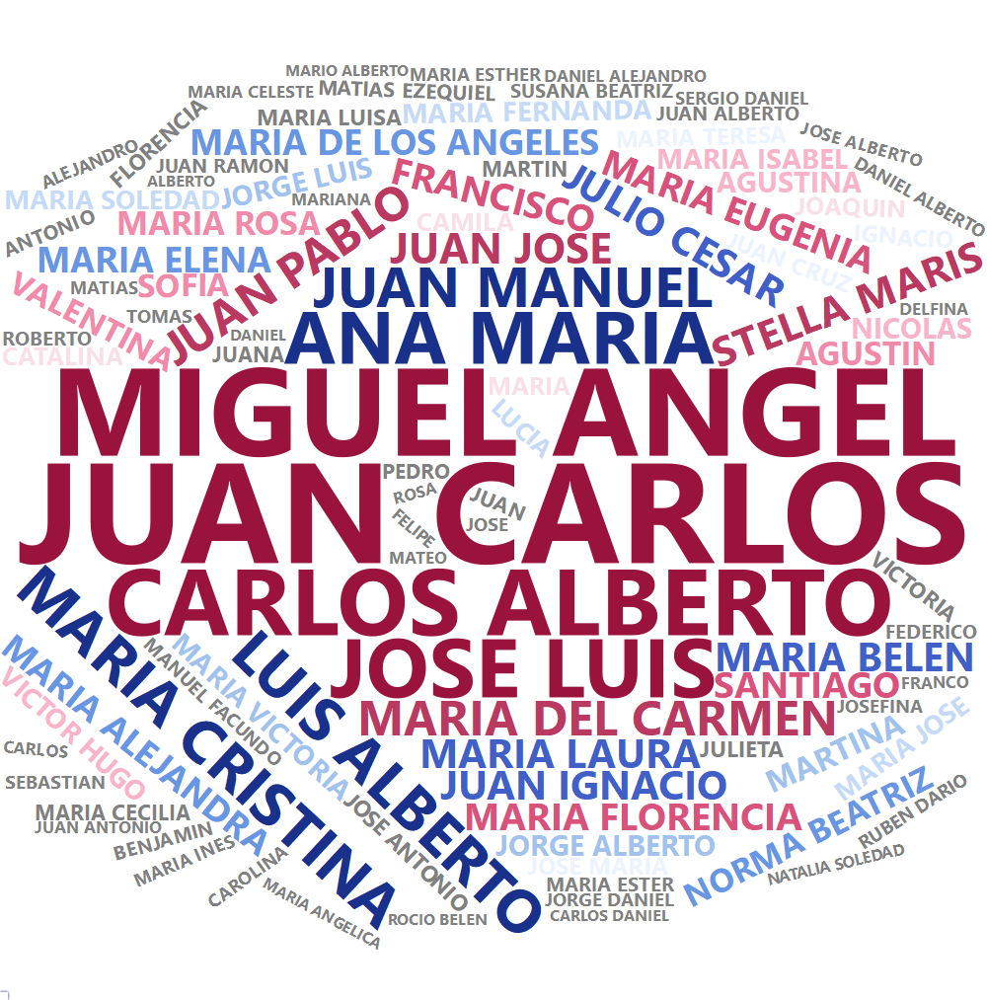

| desde | hasta | carga |
|---|---|---|
| 2021-04-05 | 2021-04-12 | 84380 |
| 2021-04-12 | 2021-04-19 | 84161 |
| 2021-04-19 | 2021-04-26 | 83950 |
| 2021-04-26 | 2021-05-02 | 84340 |
| 2021-05-02 | 2021-05-10 | 84340 |
| 2021-05-10 | 2021-05-16 | 83002 |
| 2021-05-16 | 2021-05-23 | 82206 |
| 2021-05-23 | 2021-05-31 | 83694 |
| 2021-05-31 | 2021-06-06 | 80030 |
| 2021-06-06 | 2021-06-13 | 80622 |
Anexo: otros datasets
A continuación se referencian otros dataset incluidos en la librería datosIC, con su descripción, variables y fuente; y un detalle de posibles temas que podrían cubrir en aspectos de docencia.
| Dataset | Temas |
|---|---|
bateria |
Regresión |
nombrarg |
Estadística descriptiva |
Descripción, variables y fuente
bateria
Descripción: Datos del historial de capacidad de carga de una batería de Li-Ion L19M4PC2 con capacidad de fábrica de 80.000 mWh en una Notebook LENOVO 81YT con 505 ciclos de carga.
Variables:
desde: fecha de inicio del período, en el formato año-mes-día.hasta: fecha de finalización del período, en el formato año-mes-día.carga: carga máxima alcanzada (mWh) durante el período.
Fuente: Reporte generado a partir de la instrucción
powercfg /batteryreporten Windows 11.
Disponible en la librería datosIC bajo el nombre de bateria.

nombrarg
Descripción: Datos del histórico de nombres registrados ante el Registro Nacional de las Personas en Argentina desde 1922 y hasta 2015 agrupado por nombre y año. Se preprocesó la base de datos.gob.ar excluyendo, entre otros, casos de múltiples nombres (especialmente, muy antiguos).
Variables:
nombre: nombre registrado, en mayúsculas y sin tilde.cantidad: cantidad de nombres registrados en el año.anio: año de registro.
Fuente: datos.gob.ar
Disponible en la librería datosIC bajo el nombre de nombrarg.
| nombre | cantidad | anio |
|---|---|---|
| LEONEL HERNAN | 7939 | 1975 |
| JUAN CARLOS | 7357 | 1953 |
| JUAN CARLOS | 7315 | 1950 |
| JUAN CARLOS | 7280 | 1951 |
| JUAN CARLOS | 7129 | 1952 |
| JUAN CARLOS | 7111 | 1954 |
| JUAN CARLOS | 7077 | 1955 |
| JUAN CARLOS | 6996 | 1949 |
| MARIA BELEN | 6940 | 1993 |
| JUAN CARLOS | 6908 | 1956 |
